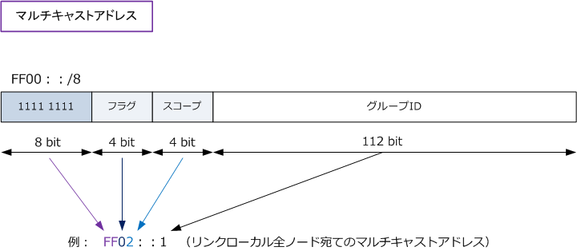
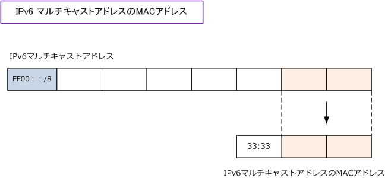
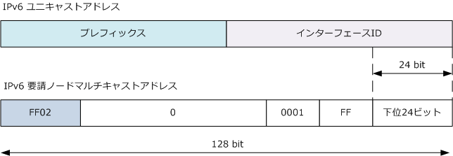

IPv6 - multicast address
IPv6 - マルチキャストアドレス
IPv6のマルチキャストアドレスは先頭の8ビットが「1111 1111」から始まります。16進数の表記については 「FF00：：/8」となります。次の4ビットはフラグ、次の4ビットはスコープ、最後の112ビットはグループID です。フラグは、IANAによって永続的に割り当てられるものは 0 、一時的に割り当てられるものは 1 と指定。

| フラグ ( 16進数 ) | スコープ ( 16進数 ) |
|---|---|
| 0 = 永続的 or 1 = 一時的 |
0 = 予約 |
| 0 = 永続的 or 1 = 一時的 |
1 = インターフェースローカル |
| 0 = 永続的 or 1 = 一時的 |
2 = リンクローカル |
| 0 = 永続的 or 1 = 一時的 |
3 = 予約 |
| 0 = 永続的 or 1 = 一時的 |
4 = 管理ローカル |
| 0 = 永続的 or 1 = 一時的 |
5 = サイトローカル |
| 0 = 永続的 or 1 = 一時的 |
6 = 未指定 |
| 0 = 永続的 or 1 = 一時的 |
7 = 未指定 |
| 0 = 永続的 or 1 = 一時的 |
8 = 組織ローカル |
| 0 = 永続的 or 1 = 一時的 |
9 ～ D = 未指定 |
| 0 = 永続的 or 1 = 一時的 |
E = グローバル |
| 0 = 永続的 or 1 = 一時的 |
F = 予約 |
なお、CiscoルータでIPv6を設定した場合、自動的に以下の3つのマルチキャストグループに参加します。
| IPv6マルチキャストアドレス | 対象 | フラグ | スコープ |
|---|---|---|---|
| FF02::1 | 同じリンク上の全てのノード | 0 = 永続的 | 2 = リンクローカル |
| FF02::2 | 同じリンク上の全てのルータ | 0 = 永続的 | 2 = リンクローカル |
| FF02::1:FFxx:xxxx | 要請ノードマルチキャストアドレス | 0 = 永続的 | 2 = リンクローカル |
・ IPv6が有効なホストのインターフェースは 「FF02::1」 と 「FF02::1：FFxx:xxxx」 に自動的に参加します。 ・ 要請ノード（solicited-node）アドレスの FF02::1:FFxx：xxxx は FF02::1：FF00:0000 ～ FF02::1:FFFF:FFFF の範囲。 ・ 上記3つは予約済みIPv6マルチキャストアドレスとなりますが、上記3つ以外にも以下のような予約済みアドレスがあります。
| IPv6マルチキャストアドレス | 対象 | フラグ | スコープ |
|---|---|---|---|
| FF02::5 | 同じリンク上の全てのOSPFルータ | 0 = 永続的 | 2 = リンクローカル |
| FF02::6 | 同じリンク上の全てのOSPF指定ルータ | 0 = 永続的 | 2 = リンクローカル |
| FF02::9 | 同じリンク上の全てのRIPルータ | 0 = 永続的 | 2 = リンクローカル |
| FF02::101 | 同じリンク上の全てのNTPサーバ | 0 = 永続的 | 2 = リンクローカル |
| FF05::101 | サイトローカル上の全てのNTPサーバ | 0 = 永続的 | 5 = サイトローカル |
スコープフィードについて
最後に、スコープフィールドについて理解を深めます。スコープフィールドの4bitの値によりパケットの到達 範囲を容易に制御することができます。例えば全てのノードにパケットを送信するといっても、このスコープ フィールドを変更すると、グループIDが同じであっても、宛先に以下のような違いが出てきます。
| 宛先アドレス | スコープ | 結果 |
|---|---|---|
| FF02::1 | リンクローカル | 同じリンク上の全てのノードに送信 |
| FF05::1 | サイトローカル | 同じサイト内の全てのノードに送信 |
| FF08::1 | 組織ローカル | 同じ拠点内の全てのノードに送信 |
| FF0E::1 | グローバル | インターネット上の全てのノードに送信 |
IPv6 - マルチキャストアドレスのMACアドレス
IPv6マルチキャストアドレスのMACアドレスは、先頭16ビットが予約されており 33:33 という値になります。 下位32ビットについては、IPv6マルチキャストアドレスの下位32ビットをそのまま使用します。つまり例えば マルチキャストアドレスが FF02：：1：FF22：2222 の場合、そのIPv6マルチキャストのMACアドレスの値は 33：33：FF：22：22：22となります。例えば FF02：：1 ならMACアドレスは 33：33：00：00：00：01。

IPv6 - 要請ノードマルチキャストアドレス
IPv6の要請ノードマルチキャストアドレスは、データリンク層のアドレス解決で使用されて、IPv4アドレスの ARPに相当します。IPv6の要請ノードマルチキャストアドレス [ FF02：：1：FFxx：xxxx ] の [ x ] は、自身 のIPv6が有効なI/FのIPv6ユニキャストアドレス、またはエニーキャストアドレスの下位24ビットから自動的に 構成されます。例えばインターフェースに「2037：：01：800：200D：8C6C」アドレスが割り振られていた 場合、そのインターフェースの要請ノードマルチキャストアドレスは FF02：：1：FF0D：8C6C となります。

IPv4ではMACアドレスの解決にARPを使用しますが、IPv6ではMACアドレスの解決にICMPv6を使用します。 IPv6ノードが宛先のノードのIPv6アドレスが分かるが、MACアドレスが分からない場合は、ICMP Type 135 （Neighbor Solicitation Message）の要請ノードマルチキャストアドレスを宛先として送信します。
例えば宛先IPアドレスが FE80：：1a3b：5c7e である場合、IPv6ノードはそのIPv6アドレスから作成した FF02：：1：FF3b：5c7e の要請ノードマルチキャストアドレス宛にICMPを送信し、MACアドレスの解決を 図ろうとします。このように要請ノードマルチキャストアドレスは Neighbor Discovery の際に使用します。
参考：主な予約済みIPv6マルチキャストアドレス
| マルチキャストアドレス | 用途 |
|---|---|
| FF02::1 | 全てのノードアドレス（ リンクローカル ） |
| FF02::2 | 全てのルータ（ リンクローカル ） |
| FF02::5 | OSPFv3 ルータ |
| FF02::6 | OSPFv3 DR/BDR |
| FF02::9 | RIPng ルータ |
| FF02::A | EIGRP ルータ |
| FF02::D | 全てのPIMルータ |
| FF02::1:2 | 全てのDHCPエージェント |
| FF05::1:3 | 全てのDHCPサーバ（ サイトローカル ） |
| FF02::1:FF00:0/104 | 要請ノードマルチキャスト |